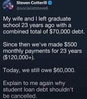

0
0

An anonymous reader quotes a report from TorrentFreak: The High Court in New Delhi, India, has granted another pirate site blocking order in favor of American movie industry giants, including Apple, Warner., Netflix, Disney and Crunchyroll. The injunction targets notorious pirate sites, requesting blockades at Indian ISPs. More crucially, however, globally operating domain registrars, including U.S. companies, are also compelled to take action. However, despite earlier cooperation, most don't seem eager to comply. [...] As reported by Verdictum a few days ago, the High Court in New Delhi issued a new blocking injunction on December 18, targeting more than 150 pirate site domains, including yflix.to, animesuge.bz, bs.to, and many others.
The complaint (PDF) is filed by Warner Bros., Apple, Crunchyroll, Disney, and Netflix, which are all connected to the MPA's anti-piracy arm, ACE. The referenced works include some of the most pirated titles, such as Stranger Things, Squid Game, and Silo. In addition to targeting Indian ISPs, the order also lists various domain name registries and related organizations as defendants. This includes American registrars such as Namecheap and GoDaddy, but also the government of the Kingdom of Tonga, which is linked to .to domains. By requiring domain name registrars to take action, the Indian court orders have a global impact.
In addition to suspending the domain names within three days days, the domain name registrars are given four weeks to disclose the relevant subscriber information connected to these domains. "[The registrars] shall lock and suspend Defendant Nos. 1 to 47 websites within 72 hours of being communicated with a copy of this Order and shall file all the Basic Subscriber Information, including the name, address, contact information, email addresses, bank details, IP logs, and any other relevant information [...] within four weeks of being communicated with a copy of this Order," the High Court wrote. While the "Dynamic+" injunction is designed to be a global kill switch, its effectiveness depends entirely on the cooperation of the domain name registrars. Since most of these are based outside of India, their compliance is not guaranteed.
Read more of this story at Slashdot.
A clinical trial found that seniors at high stroke risk who wore an Apple Watch were four times more likely to have hidden heart rhythm disorders detected than those receiving standard care. The researchers noted that over half the time, these smartwatch wearers with heart rhythm problems hadn't shown any symptoms prior to diagnosis. From U.S. News & World Report: Later editions of Apple Watches are equipped with two functions that can help monitor heart health -- photoplethysmography (PPG), which tracks heart rate, and a single-lead electrocardiogram (ECG) that monitors heart rhythm. "Using smartwatches with PPG and ECG functions aids doctors in diagnosing individuals unaware of their arrhythmia, thereby expediting the diagnostic process," said senior researcher Dr. Michiel Winter, a cardiologist at Amsterdam University Medical Center in The Netherlands. "Our findings suggest a potential reduction in the risk of stroke, benefiting both patients and the health care system by reducing costs," Winter said in a news release.
[...] Smartwatches are much easier than other wearable devices for detecting irregular heart rhythms [...]. These other means require people to wear sticky leads, carry around bulky monitors or even receive short-term implants. Lead researcher Nicole van Steijn, a doctoral candidate at Amsterdam UMC, noted that wearables that track both the pulse and electrical activity have been around for a while. "However, how well this technology works for the screening of patients at elevated risk for atrial fibrillation had not yet been investigated in a real-world setting,"she said in a news release. The findings have been published in the Journal of the American College of Cardiology.
Read more of this story at Slashdot.
A new study shows that earthquake monitoring networks can track falling space debris by detecting the sonic booms produced during atmospheric reentry, sometimes more accurately than radar. The Associated Press reports: Scientists reported Thursday that seismic readings from sonic booms that were generated when a discarded module from a Chinese crew capsule reentered over Southern California in 2024 allowed them to place the object's path nearly 20 miles (30 kilometers) farther south than radar had predicted from orbit. Using this method to track uncontrolled objects plummeting at supersonic speeds, they said, could help recovery teams reach any surviving pieces more quickly -- crucial if the debris is dangerous.
"The problem at the moment is we can track stuff very well in space," said Johns Hopkins University's Benjamin Fernando, the lead researcher. "But once it gets to the point that it's actually breaking up in the atmosphere, it becomes very difficult to track." His team's findings, published in the journal Science, focus on just one debris event. But the researchers already have used publicly available data from seismic networks to track a few dozen other reentries, including debris from three failed SpaceX Starship test flights in Texas. [...]
Fernando is looking to eventually publish a catalog of seismically tracked, entering space objects, while improving future calculations by factoring in the wind's effect on falling debris. In a companion article in Science, Los Alamos National Laboratory's Chris Carr, who was not involved in the study, said further research is needed to reduce the time between an object's final plunge and the determination of its course. For now, Carr said this new method "unlocks the rapid identification of debris fall-out zones, which is key information as Earth's orbit is anticipated to become increasingly crowded with satellites, leading to a greater influx of space debris."
Read more of this story at Slashdot.
Bruce66423 shares a report from the Guardian: New filtration technology developed by Rice University may absorb some Pfas "forever chemicals" at 100 times the rate than previously possible, which could dramatically improve pollution control and speed remediations. Researchers also say they have also found a way to destroy Pfas, though both technologies face a steep challenge in being deployed on an industrial scale. A new peer-reviewed paper details a layered double hydroxide (LDH) material made from copper and aluminum that absorbs long-chain Pfas up to 100 times faster than commonly used filtration systems.
[...] [Michael Wong, director of Rice's Water Institute, a Pfas research center] said Rice's non-thermal process works by soaking up and concentrating Pfas at high levels, which makes it possible to destroy them without high temperatures. The LDH material Rice developed is a variation of similar materials previously used, but researchers replaced some aluminum atoms with copper atoms. The LDH material is positively charged and the long-chain Pfas are negatively charged, which causes the material to attract and absorb the chemicals, Wong said. [...]
Pfas are virtually indestructible because their carbon atoms are bonded with fluoride, but Rice found that the bonds could be broken if the chemicals in the material were heated to 400-500C -- a relatively low temperature. The fluoride gets trapped in the LDH material and is bonded to calcium. The leftover calcium-fluoride material is safe and can be disposed of in a landfill, Wong said. The process works with some long-chain Pfas that are among the most common water pollutants, and it also absorbed some smaller Pfas that are commonplace.
Wong said he is confident the material can be used to absorb a broad array of Pfas, especially if they are negatively charged. Most new Pfas elimination systems fail to work at an industrial scale. Wong said the new material has an advantage because its absorption rate is so strong, it can be used repeatedly and it is in a "drop in material," meaning it can be used with existing filtration infrastructure. That eliminates one of the major cost barriers.
Read more of this story at Slashdot.
The U.S. Department of Justice has opened a criminal investigation into Deel over allegations that it recruited a spy inside rival Rippling, according to documents seen by The Wall Street Journal. From the report: An Ireland-based Rippling employee, Keith O'Brien, alleged in an affidavit filed in April that Deel Chief Executive Alex Bouaziz recruited him and gave him instructions for what information to take from Rippling. O'Brien alleged that other executives were involved in the spying plot, including Bouaziz's father, who is Deel's executive chairman and chief strategy officer.
A spokeswoman for Deel said the company isn't aware of a criminal investigation but is willing to cooperate with authorities. The company has previously said: "We deny all legal wrongdoing and look forward to asserting our counterclaims." Unsealed court documents allege that an entity tied to Deel transferred $6,000 to an account owned by the wife of Chief Operating Officer Dan Westgarth, and that the same amount was forwarded from the account to O'Brien seconds later.
Read more of this story at Slashdot.
An anonymous reader quotes a report from Wired: When TikTok users in the U.S. opened the app today, they were greeted with a pop-up asking them to agree to the social media platform's new terms of service and privacy policy before they could resume scrolling. These changes are part of TikTok's transition to new ownership. In order to continue operating in the U.S., TikTok was compelled by the U.S. government to transition from Chinese control to a new, American-majority corporate entity. Called TikTok USDS Joint Venture LLC, the new entity is made up of a group of investors that includes the software company Oracle. It's easy to tap "agree" and keep on scrolling through videos on TikTok, so users might not fully understand the extent of changes they are agreeing to with this pop-up.
Now that it's under U.S.-based ownership, TikTok potentially collects more detailed information about its users, including precise location data. Here are the three biggest changes to TikTok's privacy policy that users should know about. TikTok's change in location tracking is one of the most notable updates in this new privacy policy. Before this update, the app did not collect the precise, GPS-derived location data of U.S. users. Now, if you give TikTok permission to use your phone's location services, then the app may collect granular information about your exact whereabouts. Similar kinds of precise location data is also tracked by other social media apps, like Instagram and X.
[...] Rather than an adjustment, TikTok's policy on AI interactions adds a new topic to the privacy policy document. Now, users' interactions with any of TikTok's AI tools explicitly fall under data that the service may collect and store. This includes any prompts as well as the AI-generated outputs. The metadata attached to your interactions with AI tools may also be automatically logged. [...] This change to TikTok's privacy policy may not be as immediately noticeable to users, but it will likely have an impact on the types of ads you see outside of TikTok. So, rather than just using your collected data to target you while using the app, TikTok may now further leverage that info to serve you more relevant ads wherever you go online. As part of this advertising change, TikTok also now explicitly mentions publishers as one kind of partner the platform works with to get new data.
Read more of this story at Slashdot.
The White House doubled down after posting a digitally altered photo of Minnesota protester Nekima Levy Armstrong, dismissing it as a "meme" despite objections from her attorney and comparisons to reality-distorting propaganda. "YET AGAIN to the people who feel the need to reflexively defend perpetrators of heinous crimes in our country I share with you this message: Enforcement of the law will continue. The memes will continue. Thank you for your attention to this matter," White House spokesperson Kaelan Dorr wrote in a post on X. The Hill reports: The statement came after Homeland Security Secretary Kristi Noem posted a photo of Armstrong's arrest Thursday showing Armstrong with what appears to be a blank facial expression. However, the White House later posted an altered version of the same photo that shows Armstrong crying.
Armstrong's attorney Jordan Kushner said in an interview with CNN that an agent was recording Armstrong's arrest on their cellphone. "I've never seen anything like it. It's so unprofessional," Kushner said. "He was ordered to do it because the government was looking to make a spectacle of this case. I observed the whole thing. She was dignified, calm, rational the whole time." Kushner went on to call the move to alter the photo "a hallmark of a fascist regime where they actually alter reality."
Read more of this story at Slashdot.
An anonymous reader shares a report: Shares of Japanese toilet maker Toto gained the most in five years after booming memory demand excited expectations of growth in its little-known chipmaking materials operations. The stock surged as much as 11%, its steepest rise since February 2021, after Goldman Sachs analysts said Toto's electrostatic chucks used in NAND chipmaking will likely benefit from an AI infrastructure buildout that's tightening supplies of both high-end and commodity memory.
[...] Known for its heated toilet seats, the maker of washlets has for decades been part of the semiconductor and display supply chain via its advanced ceramic parts and films. Its electrostatic chucks -- which it began mass producing in 1988 -- are used to hold silicon wafers in place during chipmaking while helping to control temperature and contamination, according to the company. The company's new domain business accounted for 42% of its total operating income in the fiscal year ended March 2025, Bloomberg-compiled data show.
Read more of this story at Slashdot.
Three co-founders of the game studio That's No Moon "are suing another co-founder for allegedly hijacking the company's website domain name," reports the gaming news site Aftermath, "taking the website offline and disabling employee access to email accounts, according to a new lawsuit."
Tina Kowalewski, Taylor Kurosaki, and Nick Kononelos filed a complaint against co-founder and former CEO Michael Mumbauer on Tuesday in a California court. [Game studio] That's No Moon, which was founded in 2020 by veterans of Infinity Ward, Naughty Dog, and other AAA studios, said in its complaint that Mumbauer is looking to "cripple" the studio after being fired in 2022...
Mumbauer, according to the complaint, purchased the domain name, and several others, when the studio was founded; it said both parties agreed these would be controlled by the studio. Mumbauer allegedly still has access to the domains, and That's No Moon said he took control over the website on Jan. 6, disabled the studio's access, and turned off employees' ability to email external addresses. The team was locked out for two days as a four-person IT team worked to get the services back online. On the public-facing side, the website briefly redirected to the Travel Switzerland page, according to the complaint. That's No Moon's lawyers said the co-founders sent Mumbauer a letter on Jan. 7 demanding he "relinquish his unauthorized access." That's when, according to the compliant, the website started redirecting to a GoDaddy Auction site, where the domain was priced at $6,666,666; That's No Moon remarked in the complaint: "A number that [Mumbauer] may well have selected for its Satanic connotation."
As of Wednesday, Aftermath was able to access a public-facing That's No Moon website using both the original domain and the new one... The charges listed as part of this lawsuit are trademark infringement, cybersquatting, computer fraud, conversion, trespass to chattels, and breach of contract. That's No Moon also asked a judge for a temporary restraining order to prevent Mumbauer from continued access to the domains. Mumbauer has not responded to Aftermath's request for comment. Mumbauer said, in an email to That's No Moon attorney Amit Rana published as part of the lawsuit, that he intends to file "a wrongful termination countersuit and will be seeking extensive damages...."
That's No Moon hasn't yet announced its first game, but has said the game is led by creative director Taylor Kurosaki and game director Jacob Minkoff. South Korean publisher Smilegate invested $100 million into the company, That's No Moon announced in 2021.
Read more of this story at Slashdot.
TechCrunch reports:
On Wednesday, Anthropic released a revised version of Claude's Constitution, a living document that provides a "holistic" explanation of the "context in which Claude operates and the kind of entity we would like Claude to be...." For years, Anthropic has sought to distinguish itself from its competitors via what it calls "Constitutional AI," a system whereby its chatbot, Claude, is trained using a specific set of ethical principles rather than human feedback... The 80-page document has four separate parts, which, according to Anthropic, represent the chatbot's "core values." Those values are:
1. Being "broadly safe."
2. Being "broadly ethical."
3. Being compliant with Anthropic's guidelines.
4. Being "genuinely helpful..."
In the safety section, Anthropic notes that its chatbot has been designed to avoid the kinds of problems that have plagued other chatbots and, when evidence of mental health issues arises, direct the user to appropriate services...
Anthropic's Constitution ends on a decidedly dramatic note, with its authors taking a fairly big swing and questioning whether the company's chatbot does, indeed, have consciousness. "Claude's moral status is deeply uncertain," the document states. "We believe that the moral status of AI models is a serious question worth considering. This view is not unique to us: some of the most eminent philosophers on the theory of mind take this question very seriously."
Gizmodo reports:
The company also said that it dedicated a section of the constitution to Claude's nature because of "our uncertainty about whether Claude might have some kind of consciousness or moral status (either now or in the future)." The company is apparently hoping that by defining this within its foundational documents, it can protect "Claude's psychological security, sense of self, and well-being."
Read more of this story at Slashdot.
California became the first U.S. state to join the World Health Organization's Global Outbreak Alert and Response Network (GOARN), one day after the U.S. formally exited the WHO. The Hill reports: This announcement comes just one day after the U.S.'s withdrawal from the WHO became official after nearly 80 years of membership, having been a founding member of the organization. "The Trump administration's withdrawal from WHO is a reckless decision that will hurt all Californians and Americans," [California Governor Gavin Newsom] said in a statement. "California will not bear witness to the chaos this decision will bring. We will continue to foster partnerships across the globe and remain at the forefront of public health preparedness, including through our membership as the only state in WHO's Global Outbreak Alert & Response Network."
Read more of this story at Slashdot.
Longtime Slashdot reader AmiMoJo shares a report from the Guardian: The financial campaigner James Daley has launched a 1.5 billion pound (approximately $1.5 billion) class action lawsuit against Apple over its mobile phone wallet, claiming the U.S. tech company blocked competition and charged hidden fees that ultimately harmed 50 million UK consumers. The lawsuit takes aim at Apple Pay, which they say has been the only contactless payment service available for iPhone users in Britain over the past decade.
Daley, who is the founder of the advocacy group Fairer Finance, claims this situation amounted to anti-competitive behavior and allowed Apple to charge hidden fees, ultimately pushing up costs for banks that passed charges on to consumers, regardless of whether they owned an iPhone. It is the first UK legal challenge to the company's conduct in relation to Apple Pay, and takes place months after regulators like the Competition and Markets Authority and the Payments Systems Regulator began scrutinising the tech industry's digital wallet services. The case has been filed with the Competition Appeal Tribunal, which will now decide whether the class action case can move forward.
[...] Daley's lawsuit alleges that Apple refused to give other app developers and outside businesses access to the contactless payment technology on its iPhones, which meant it could charge banks and card issuers fees on Apple Pay transactions that his lawyers say "are not in line with industry practice." The lawsuit notes that similar fees are not charged on equivalent payments on Android devices, which are built by Google. It says that the additional costs were borne by UK consumers, having been passed on through charges on a range of personal banking products ranging from current accounts, credit cards, to savings and mortgages. The lawsuit says that about 98% of consumers are exposed to banks that listed cards on Apple Pay, meaning the vast majority of the UK population may have been affected.
Read more of this story at Slashdot.
Jeffrey Snover, the driving force behind PowerShell, has retired after a career that reshaped Windows administration. The Register reports: Snover's retirement comes after a brief sojourn at Google as a Distinguished Engineer, following a lengthy stint at Microsoft, during which he pulled the company back from imposing a graphical user interface (GUI) on administrators who really just wanted a command line from which to run their scripts. Snover joined Microsoft as the 20th century drew to a close. The company was all about its Windows operating system and user interface in those days -- great for end users, but not so good for administrators managing fleets of servers. Snover correctly predicted a shift to server datacenters, which would require automated management. A powerful shell... a PowerShell, if you will.
[...] Over the years, Snover has dropped the occasional pearl of wisdom or shared memories from his time getting PowerShell off the ground. A recent favorite concerns the naming of Cmdlets and their original name in Monad: Function Units, or FUs. Snover wrote: "This abbreviation reflected the Unix smart-ass culture I was embracing at the time. Plus I was developing this in a hostile environment, and my sense of diplomacy was not yet fully operational." Snover doubtless has many more war stories to share. In the meantime, however, we wish him well. Many admins owe Snover thanks for persuading Microsoft that its GUI obsession did not translate to the datacenter, and for lengthy careers in gluing enterprise systems together with some scripted automation.
Read more of this story at Slashdot.
Global hiring remains 20% below pre-pandemic levels and job switching has hit a 10-year low, according to a LinkedIn report, and new university graduates are bearing the brunt of a labor market that increasingly favors experienced candidates over fresh talent.
In the UK, the Institute of Student Employers found that graduate hiring fell 8% in the last academic year and employers now receive 140 applications for each vacancy, up from 86 per vacancy in 2022-23. US data from the New York Federal Reserve shows unemployment among recent college graduates aged 22-27 stands at 5.8% versus 4.1% for all workers.
Recruiter Reed had 180,000 graduate job postings in 2021 but only 55,000 in 2024. In a survey of Reed clients last year, 15% said they had reduced hiring because of AI. London mayor Sadiq Khan said the capital will be "at the sharpest edge" of AI-driven changes and that entry-level jobs will be first to go.
Read more of this story at Slashdot.
An anonymous reader quotes a report from TechCrunch: Microsoft provided the FBI with the recovery keys to unlock encrypted data on the hard drives of three laptops as part of a federal investigation, Forbes reported on Friday. Many modern Windows computers rely on full-disk encryption, called BitLocker, which is enabled by default. This type of technology should prevent anyone except the device owner from accessing the data if the computer is locked and powered off.
But, by default, BitLocker recovery keys are uploaded to Microsoft's cloud, allowing the tech giant -- and by extension law enforcement -- to access them and use them to decrypt drives encrypted with BitLocker, as with the case reported by Forbes. The case involved several people suspected of fraud related to the Pandemic Unemployment Assistance program in Guam, a U.S. island in the Pacific. Local news outlet Pacific Daily News covered the case last year, reporting that a warrant had been served to Microsoft in relation to the suspects' hard drives.
Kandit News, another local Guam news outlet, also reported in October that the FBI requested the warrant six months after seizing the three laptops encrypted with BitLocker. [...] Microsoft told Forbes that the company sometimes provides BitLocker recovery keys to authorities, having received an average of 20 such requests per year.
Read more of this story at Slashdot.
Wall Street Journal : Sources: the EU's executive arm is drafting new legislation aimed at promoting tech sovereignty and openly discussing the security risks posed by US tech — Trump's Greenland threats inject urgency into region's efforts to reduce its reliance on American technology
Melos Ambaye / Bloomberg : Elliptic: ruble-backed stablecoin A7A5 surpassed $100B in transactions in under a year, but demand cooled and daily volume fell from a peak of $1.5B+ to ~$500M — The ruble-backed stablecoin created to circumvent sanctions on Russia has surpassed $100 billion in transactions in less …
Jagmeet Singh / TechCrunch : Counterpoint: India smartphone shipments were flat YoY at ~153M; Apple shipped 14M iPhones, raising its share of shipments to a record 9%, up from 7% in 2024 — Apple's iPhone is gaining ground fast in India, shipping about 14 million units in 2025, based on market data shared exclusively with TechCrunch.
Benjamin Wallace / New York Times : A look at Kalshi and Polymarket's rise; reports say Polymarket had 491K monthly active traders in December 2025, and <0.04% of addresses took 70% of profits — Two months after quitting his job as a corporate C.P.A. to trade full time in prediction markets, Joel Holsinger, 26, was well along the road to making his first $100,000.
Miranda Nazzaro / FedScoop : OpenAI and longtime US government contractor Leidos announce a partnership to roll out generative and agentic AI tools for specific missions at federal agencies — While AI is increasingly used in agencies already, company leaders say the collaboration will help tailor the technology to specific missions.
Wall Street Journal : Sources: the Trump administration dismissed two Commerce Department officials, who focused on Chinese tech threats, raising concerns about a softening stance — Departing staffers worked for a Commerce Department office charged with protecting the U.S. from Chinese technological advances
Dan Whateley / Business Insider : Memo: TikTok CEO Shou Chew hailed the establishment of the TikTok USDS JV as “great news”, and said the app is used by 200M US users and 7.5M US businesses — - TikTok has finalized a deal to keep its business operating in the US. — The deal, a US joint venture …
Wall Street Journal : Intel's stock, riding high for months after the US government took a 10% stake, crashed 17% on Jan. 23, after the company flagged continued operational issues — After months of riding positive vibes, the troubled chip maker reminded investors why it needed a rescue in the first place
Bloomberg : Sources: Grab's planned acquisition of GoTo has hit a snag over Indonesian carrier Telkomsel's unwillingness to sell its ~2% stake in GoTo at current valuations — Grab Holdings Ltd.'s planned multibillion-dollar acquisition of GoTo Group has hit a stumbling block.
The Information : Google acquires Common Sense Machines, whose AI models create 3D assets from 2D images, and was last valued at $15M after raising $10M from a16z and others — Google has acquired Common Sense Machines, a Cambridge, Mass.,-based startup developing generative artificial intelligence models …
Reece Rogers / Wired : TikTok users in the US were presented with a new privacy policy; the changes were part of the app's ownership transition and now allow precise location tracking — According to its new privacy policy, TikTok now collects more data on its users, including their precise location …
New York Times : Court filing: SEC drops a case against Gemini Trust, founded by the Winklevoss twins, major Trump donors; the case stemmed from Gemini Earn's implosion — The agency says that victims of an investment offering involving Gemini Trust got their money back, though after a regulatory action brought by the New York attorney general.
Sarah Perez / TechCrunch : Google Photos' latest generative AI-powered feature, “Me Meme”, lets users create memes from their own images, launching first in the US — Google Photos will now let you make memes with your own images. On Thursday, Google introduced a new generative AI-powered feature called …
The Information : Source: Greenoaks, one of Brex's top investors, will return twice its investment after Capital One's Brex acquisition for $5.15B in a half-cash, half-stock deal — Brex's $5.15 billion agreement to sell to Capital One isn't the kind of exit employees or investors would have dreamed of four years ago …
Chris Welch / Bloomberg : Solos Technology sues Meta and EssilorLuxottica, alleging they willfully violated several patents that cover “core technologies in the field of smart eyewear” — Meta Platforms Inc., the reigning leader in the growing smart glasses category, is being sued by another glasses maker …